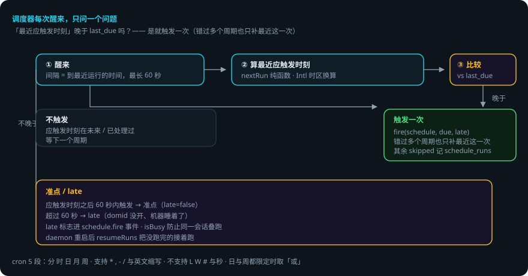
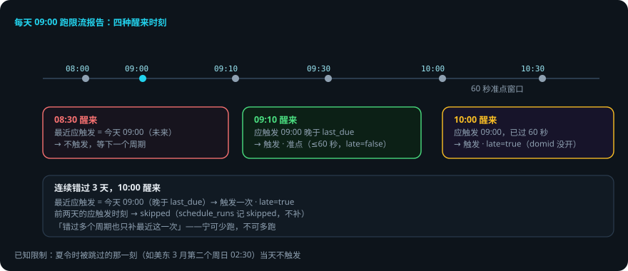

定时任务
本页回答四个问题：cron 怎么写？调度器怎么醒来、怎么补触发？迟到了会怎样？出错了会怎样？ 交互演示：错过补触发模拟（选场景，看调度器怎么判定准点 / late / 只补一次）。
packages/daemon/src/{cron,scheduler}.ts。 贯穿例子：每天早上 9 点给登录接口跑一次限流报告。
先说结论
- cron 是 5 段：分 时 日 月 周。支持
*,-/与英文缩写；不支持LW#与秒。 - 时区用
Intl换算，不引依赖；nextRun/prevRun是纯函数，可单测。 - 调度器在 domid 进程里跑，时钟与定时器全部注入（测试用假时钟）。
- 错过只补一次：醒来时「最近应触发时刻」晚于
last_due就触发一次，错过多个周期也只补最近这一次。 - 醒来的间隔最长 60 秒：系统休眠后定时器会漂，靠这个兜底。
- 应触发时刻之后 60 秒内算准点，超过算 late（domid 没开、机器睡着了）——
late标志进schedule.fire事件。
用到的词
| 词 | 意思 |
|---|---|
| 段 | cron 的一个字段（分 / 时 / 日 / 月 / 周）。 |
| last_due | 上次触发过的应触发时刻。 |
| 准点 | 触发发生在应触发时刻后 60 秒内。 |
| late | 触发发生在应触发时刻后超过 60 秒。 |
| 补触发 | domid 醒来时补跑错过的最近一次。 |
1. 总体流程


2. cron 表达式
5 段：分 时 日 月 周。支持 * , - /、月份与星期的英文缩写，周日写 0 或 7。不支持 L W # 与秒；日与周都限定时按 Vixie cron 的规矩取「或」。
时区换算（Intl，不引依赖）：在 UTC 分钟上走，每一步看它在目标时区里是几月几日几点，按不匹配的那一级往前跳。
已知限制：夏令时被跳过的那一刻（例如美东 3 月第二个周日 02:30）当天不触发。
3. 调度器：错过只补一次
scheduler.ts 在 domid 进程里跑：
- 每次醒来，对每个计划算「不晚于现在的最近一个应触发时刻」。
- 它晚于
last_due？是 → 触发一次（错过多个周期也只补这一次）。否 → 不触发。 - 醒来的间隔 = 到最近一次运行的时间，最长 60 秒（系统休眠之后定时器会漂，靠这个兜底）。
- 应触发时刻之后 60 秒内算准点，超过就是
late——fire(schedule, due, late)的late标志进schedule.fire事件。
4. 触发 → 任务
fire 真的去建任务并提交目标，返回会话 id（task.start 的 runId 就是会话 id）；isBusy 防止同一会话叠跑。调度器用的内部连接（SYSTEM_CONN）：不订阅、不收推送。daemon 重启后 resumeRuns 把没跑完的接着跑。
RPC 面：schedule.list / create / update / delete / runs / preview（previewCron 给下一次触发时间）；schedule.fire 是事件。
5. 出错了怎么办：机器睡了 3 个小时，9 点的报告没跑
还是「每天早上 9 点跑限流报告」。今天你 10 点才打开电脑（domid 在 9 点没开）。
- domid 醒来（10:00）。调度器对「每天 9 点」这个计划算最近应触发时刻 = 今天 09:00。
- 与 last_due 比较。昨天 09:00 已触发（last_due = 昨天 09:00）→ 今天 09:00 晚于 last_due → 触发一次。
- 准点 / late 判定。触发时刻 10:00 距应触发 09:00 超过 60 秒 →
late: true，进schedule.fire事件。 - 假如连续错过 3 天。醒来时最近应触发 = 今天 09:00（晚于 last_due）→ 只补今天这一次，前两天的跳过（
schedule_runs里记 skipped）。 - 假如你在 08:30 打开。最近应触发 = 今天 09:00，是未来时刻 → 不触发，等 09:00 正常跑。
一张表看全部情况
| 情况 | 调度器做什么 | 你要做什么 |
|---|---|---|
| 没到应触发时刻 | 不算触发 | 不用管 |
| 醒来时刚错过（≤60 秒） | 触发，late=false（准点） | 不用管 |
| 醒来时错过很久（>60 秒） | 触发一次，late=true | 不用管（看 schedule.fire 的 late） |
| 连续错过多个周期 | 只补最近一次，其余 skipped | 不用管 |
| 夏令时被跳过的那刻 | 当天不触发 | 已知限制 |
| 同一会话叠跑风险 | isBusy 防止叠跑 | 不用管 |
6. 可靠性靠什么
- 纯函数核心。
nextRun/prevRun可单测，时区逻辑不依赖环境。 - 时钟注入。测试用假时钟，时间行为确定性。
- 兜底唤醒。最长 60 秒间隔，休眠后不永久漂移。
- 错过有交代。只补一次 + skipped 记录 + late 标志，行为可审计。
- 防叠跑。isBusy 保证同一会话不叠跑。
已知限制
- cron 不支持
LW#与秒。 - 夏令时被跳过的那一刻当天不触发。
- 错过多个周期只补一次（设计如此，宁可少跑不可多跑）。
- 调度器在 domid 进程里：domid 没开就没有触发（醒来后按 late 补）。
代码在哪里
| 主题 | 位置 |
|---|---|
| cron 解析 / nextRun / prevRun | packages/daemon/src/cron.ts |
| 调度器（醒来 / 补触发 / late） | packages/daemon/src/scheduler.ts |
| 定时任务存储 | packages/store/src/schedules.ts |
| RPC 面 | packages/daemon/src/core.ts（schedule.*） |
测试：packages/daemon/test/scheduler.spec.ts（假时钟 + 假定时器，含夏令时跳变、错过补触发、late 判定）。
相关
- 任务的执行循环：编排：任务 · 子 agent · 计划。
- 调度器住在 daemon 里：daemon 内部机制。